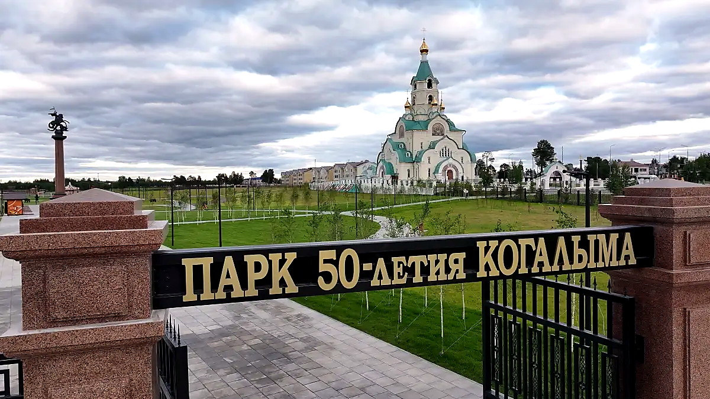

Начало будущего города на берегу Ингу-Ягуна.
История города
Когалым: 50 лет северного характера
История города собрана не сухой лентой дат, а нормальной картиной: первые экспедиции, железная дорога, нефтяная основа, статус города, культурные объекты и юбилей 2025 года.

1975—2025
Полвека развития города
Появилась управленческая основа поселения.
Когалым стал городом окружного подчинения.
Город отметил полувековую дату крупными событиями.
Коротко по смыслу
Город вырос из дороги, нефти и северной упёртости
Когалым не появился как декоративная точка на карте. Его история — это работа в тяжёлых условиях, строительство инфраструктуры почти с нуля и постепенный переход от рабочего посёлка к полноценному городу.
Ингу-Ягун
Летом 1975 года геологи и гидрологи вышли к территории будущего города. Эта точка стала началом будущего Когалыма.
Железная дорога
Строительство участка Сургут — Новый Уренгой дало поселению реальный импульс: люди, техника, связь и первые дома.
Нефтяная основа
Повховское месторождение и нефтедобыча закрепили за городом его главный промышленный характер.
Хронология
Главные вехи Когалыма
Оставлены только события, которые реально помогают понять, как менялся город.
Начало будущего города
Экспедиция геологов и гидрологов вышла на территорию будущего Когалыма. Первое поселение появилось на берегу Ингу-Ягуна.
Официальное имя посёлка
Населённому пункту присвоили название «посёлок Когалымский». В этот период появляются первые бытовые и жилые объекты.
Поселковый Совет
Образован Когалымский поселковый Совет. Поселение получает административную основу и начинает развиваться системнее.
Курс на строительство города
Вышло постановление о строительстве городов Когалыма и Лангепаса в Западной Сибири. Это закрепило будущий масштаб развития.
Когалым стал городом
15 августа посёлку присвоили статус города окружного подчинения. Это ключевая административная точка в истории Когалыма.
Связь, пресса и музыка
Появились городской узел связи, первый номер газеты «Когалымский рабочий» и детская музыкальная школа.
Культурная среда
Открылся дом культуры «Сибирь», вышел первый номер газеты «Нефтяник Когалыма». Город получает собственный общественный ритм.
Память и городские символы
Открылся мемориальный комплекс «Парк Победы» и композиция «Время Когалыма» — объекты, которые работают на городскую идентичность.
Малый театр
В Когалыме открылась сцена Государственного академического Малого театра России — сильный культурный объект для северного города.
КВЦ Русского музея
На базе Музейно-выставочного центра открылся Культурно-выставочный центр Русского музея.
Инженерное образование
Открылся филиал Пермского Политеха — новый образовательный вектор для города и нефтегазовой отрасли.
50-летие Когалыма
Юбилейный год объединил праздничную программу, обновление общественных пространств и новые городские объекты.

Юбилей 2025
50 лет — не просто дата
Юбилей сделал историю города видимой: появились новые общественные пространства, усилилась спортивная и туристическая инфраструктура, а сама дата стала поводом показать Когалым не только как нефтяной город, но и как место для жизни.
Символы
История читается в городских местах
Источники
Материал собран по официальным страницам администрации Когалыма, календарю памятных дат, материалам Малого театра, Русского музея и публикациям о юбилейных объектах.